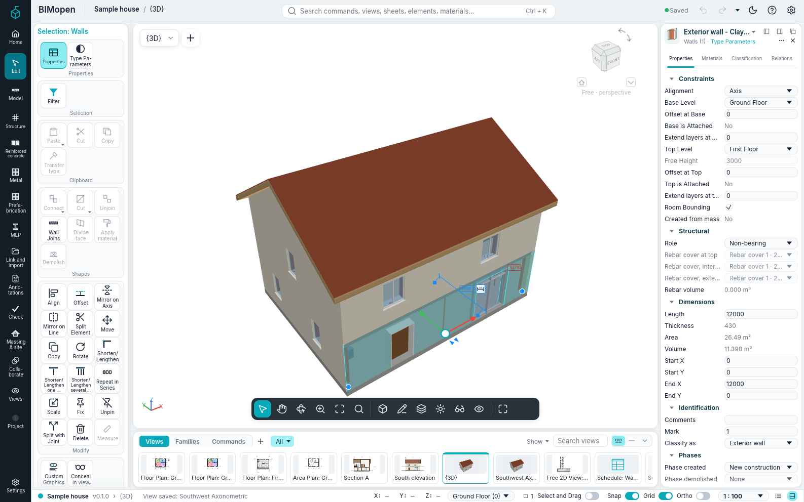

Interface styles
BIMopen has two interface styles. Both run the same commands, with the same names, keyboard shortcuts and results; only the look and the place of the tools change.
- The Revit style, described in The interface: the ribbon, the options bar, the Properties palette and the Project Browser. BIMopen starts in this style.
- The BIMopen style: a side rail, a command search, tool cards, tools floating over the view, an element panel with tabs and a strip of view thumbnails.
Choosing the style
- Open the application menu and choose Options (in the BIMopen style, the gear at the right end of the top bar).
- Under User Interface, set Interface to Revit or BIMopen.
The window changes at once. The choice is remembered, on the desktop and in the browser, and the next session starts in the same style. Theme (Light or Dark) applies to both styles.
The BIMopen style

| Part | Where | What it holds |
|---|---|---|
| Rail | Left edge | Home (the project and its files), Create (the modelling tools), Systems, Coordinate (IFC export and views from other projects), Check, Document (views, graphics, sheets and schedules), the open project and Settings (the project settings and Options). A click on the selected entry folds the tool panel |
| Top bar | Top | The project and the active view, the command search, the save state, the light or dark theme, the help and Options |
| Tool panel | Left, beside the rail | The tools of the rail entry, as tiles. Create has the Architecture tab with the building tools, then Curtain Wall, Room & Area, Drawing and references and Modify |
| Context bar | Over the view, while a tool works or something is selected | What the options bar and the contextual Modify tab show in the Revit style: the options of the tool, the type properties, the modify tools, Finish Edit Mode and Cancel Edit Mode of a sketch. The chevron folds it to one row |
| View | Centre | The view selector and + for a new view; on the side, select, the Pan, Orbit (3D) and Zoom modes (with one on, the left button drags the view; Esc ends it), zoom to fit, hide and isolate, reveal hidden elements; in 3D views the ViewCube (a click on a face, an edge or a corner looks from there, a drag orbits, the house goes back to the starting view); on the selection, the move arrows (drag one to move along it, the centre to move freely in plan: the distance shows as you drag, the release moves as Move does); at the bottom, the visual style, the detail level, the sun path and the shadows in 3D, the crop region and full screen |
| Element panel | Right | The selected element: Properties (the same parameters as the Properties palette), Materials (the layers of its type with their colours and thicknesses, and a layered preview), Classification (category, type, IFC class) and Relations (level, host, hosted doors and windows, views and schedules). With nothing selected, the properties of the active view |
| View strip | Under the view | The views by kind (Views, Plans, Sections, Elevations, 3D, Sheets, Schedules) as thumbnails or as a list; a click opens the view, + makes a new one |
| Status bar | Bottom | The project and the version, the active view, the prompt of the active tool, the cursor coordinates, the active level (its menu opens the plan of another level), the Snap, Grid and Ortho switches and the scale of the view |
The Structure and MEP tabs of Create, and Systems, say that these disciplines are not in BIMopen yet.
Command search
Press Ctrl+K, or click the search box in the top bar, and type a few letters: the list shows the commands, views, sheets, schedules, elements and materials that match. Click a result, or choose it with the arrow keys and press Enter: a command starts, a view opens, an element is selected and shown, a material opens in Materials.
The search box is also the command line of the style. Typing in a view writes there, as the
command line does in the Revit style, and Enter runs a keyboard shortcut (WA, DR,
ZF…) or a command with its arguments (wall 0,0 5,0) as typed. The list of commands is in
Command line and MCP.
Right-click menu
In plans, sections and 3D views the right button opens a dark menu: with a selection, the modify commands first (Move, Copy, Rotate, Align, Offset and the others), then the same items as the view's menu in the Revit style.
Everything of the Revit style
Every function of the Revit style has its place in the BIMopen style:
- the tab bar over the view shows the ribbon's tabs as pills; a click opens the tab's panels, the same as on the ribbon, and the contextual Modify tab opens with the options bar while a tool works or something is selected;
- BIMopen's mark at the top of the rail opens the application menu; the top bar has undo, redo and the ? menu;
- Document holds the whole Project Browser, with its menus;
- a thumbnail of the view strip can be dragged onto the open sheet, or onto a sheet's thumbnail, and its right-click menu has the browser's actions and Open in the active window;
- the view selector's menu arranges the view windows (Switch Windows, Tile, Cascade, Maximize, Replicate, Close Hidden); Ctrl+Tab goes to the previous window;
- the status bar has Select and Drag, the selection count that opens Filter, and the command log.
Light and dark

In Arabic the whole window is mirrored, in both styles: the rail and the tool panel are on the right, the element panel on the left.